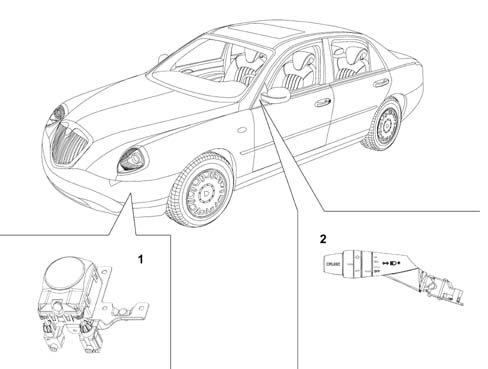
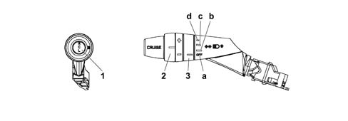
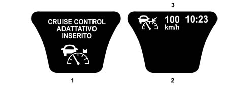
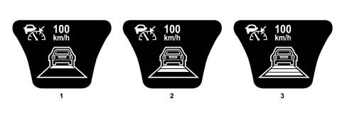
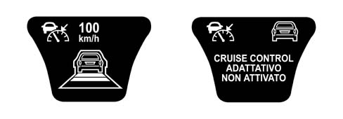
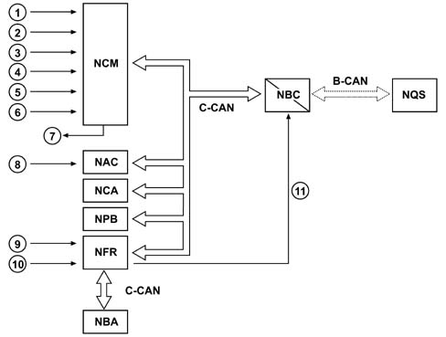
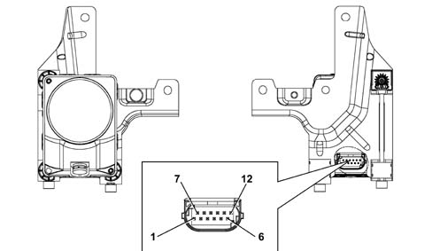

ADAPTIVE CRUISE CONTROL
- Path
- Descriptions > 55 ELECTRICAL EQUIPMENT > 5580 SPECIAL ACCESSORIES > ADAPTIVE CRUISE CONTROL
- Kind
- system description
- Applies to
- all engines; all production periods
- Interactive page
- https://sloeber94.github.io/elrnDB-lThss/en/#/201593
Applies to: all engines; all production periods
SPECIFICATIONS
The constant speed adapative regulator ACC (Adaptive Cruise Control) assists the driver by controlling both the cruising speed and the distance from the vehicle driving in front and allows the vehicle to be driven at the desired speed without pressing the accelerator pedal.
The system relieves the boredom of motorway driving, especially on long journies, because the speed memorized is automatically maintained and active driving safety is improved with a safe distance maintained from the vehicle in front. Driving at a constant speed is also beneficial for fuel economy and improves the traffic flow.
The electronically controlled system is autonomous and does not therefore require communication between vehicles or other vehicles needing to be equipped with a similar system.
The advantages of this system are:
- improved driving comfort: it removes the task of having to adjust the speed of the vehicle depending on traffic conditions from the driver
- improved safety: it maintains the distance from the vehicle in front within suitable limits
- improved economy: it allows peaceful driving and reduces consumption
- improved efficiencyP: it improves traffic flow thanks to the automatic speed control
COMPOSITION
The system components are:
- radar sensor (NAC: Adaptive Cruise Control Node),
- Cruise Control setting lever.

- 1 - Radar sensor
- 2 - Cruise Control setting lever
OPERATION
The system can be viewed as an extension of the traditional Cruise Control system, not only capable of maintaining the speed set, but also of adapting the speed of the vehicle to the road traffic conditions with limited acceleration and deceleration (including the use of the brake).
Traditional Cruise Control
After the desired speed has been set by the driver using the SET control, only restricted manual acceleration or deceleration operations are permitted
Adaptive Cruise Control
If no vehicle is identified in the driving path, the system maintains the speed set; if, on the other hand, a vehicle is identified in the driving path, the system automatically guarantees that a safe distance is maintained from the vehicle in front.
Each time the brake pedal is operated this disables the function, whilst operating the accelerator pedal allows the speed set to be exceeded without disabling the function.
The driver will be informed of the data concerning the speed set, presence / absence of an obstacle and tracking via the dashboard.
Driver input
There are 4 controls that the driver can take advantage of in addition to using the brake for releasing the system and the accelerator for overriding the system:
- ON/OFF,
- SET + (speed increase)
- SET - (speed decrease)
- RESUME
In addition to these controls which are also typical for a traditional Cruise Control system, there is the HEADWAY function, in other words the distance that must be maintained between two vehicles depending on the speed.
The lever on the steering column switch unit is used for the data input.

- 1 - Resume button
- 2 - Speed setting ring nut (SET)
- 3 - Cruise Control on/Headway settings ring nut
- a - Cruise Control OFF position
- b - Headway long distance position
- c - Headway average distance position
- d - Headway short distance position
The instrument panel display gives the driver a summary of the information relating to the speed memorized, the presence or absence of a vehicle and the distance set.
ON/OFF
The system is activated by the driver by turning the ring nut (3) into any of the Headway positions.
When the function is switched on, the icon shown in the diagram is displayed on the instrument panel. This icon remains until the system is switched off.
When the ACC system is activated the instrument panel shows "adaptive cruise control on" plus the symbol. This screen remains for 5 secs, after which the screen with the ACC symbol in the top left corner reappears.

- 1 - Screen displayed when the ACC system is switched on
- 2 - Screen normally activated with the system switched on
- 3 - Speed set
The driver can switch the system off by turning the ring nut (3) to the OFF position.
When the system is switched off, any information in the instrument panel relating to the function disappears.
SET
After having switched the ACC system on, the desired vehicle speed can be set using the SET control. The current speed of the vehicle is considered as the reference speed (cruising speed). This speed can automatically decrease depending on the traffic conditions and the system can move from the speed control state to the distance control state. The driver is given an indication of the sytem operating state through the display in the instrument panel. The minimum speed that can be set is 30 km/h, the maximum is 160 km/h.
With the ring nut rotated the speed memorized varies continuously at intervals of around 10 km/h. The new speed reached will be automatically maintained.
The moment the driver presses the SET control, the speed set will be shown on the instrument panel through the writing on the display (speed control state).
SPEED INCREASE: by acting on the increase control (SET +) it is possible to increase the speed in steps of 01 km/h. The new speed set is shown on the display and replaces the previous one.
SPEED DECREASE: by acting on the decrease control (SET -) it is possible to decrease the speed in steps of 10 km/h. The reduction in speed is also achieved by operating the braking system, with a maximum deceleration of 2.5 m/s². The new speed set is shown on the display and replaces the previous one.
RESUME
Whilst driving with the Adaptive Cruise Control system on, the driver can disable it by operating the braking system. In this case the cruising speed set previously will be maintained in the memory and can be reactivated by pressing the RESUME button.
The driver is aware of the Resume state from the flashing in the display of the speed set and they need to restore the function.
If the system was in the DISTANCE CONTROL state before it was switched off, the presence of an obstacle in front remains.
HEADWAY
The ring nut (3) allows the safe distance, depending on the speed, to be maintained from the vehicle in front when the distance control is activated to be set.
This distance is expressed, for convenience, in seconds and represents the time needed to cover the distance that separates the vehicle from the one in front.
There are three distance settings:
- "far" corresponding to around 2 seconds;
- "standard" corresponding to around 1.5 seconds;
- "overtake" corresponding to around 1 second.
Logically, as space depends on speed, the distance between the two vehicles increases gradually as the speed increases, even if the distance set is kept constant.
The headway set is shown in the instrument panel through the icon indicating the DISTANCE CONTROL.

- 1 - FAR setting
- 2 - STANDARD setting
- 3 - OVERTAKE setting
Override (accelerator)
The system can be temporarily bypassed by pressing the accelerator pedal; as soon as your foot is removed from the pedal the system returns to controlling the cruising speed set previously.
The OVERRIDE state is indicated by the flashing of the set speed display.
During this state, if the icon of an obstacle identified on the driving path is present it is activated whilst if the distance control information is present it is deactivated.
Release (brake)
If the driver operates the brake pedal this disables the system.
Using the system
Memorizing the speed
To memorize the speed, turn the ring nut (3) to one of the Headway positions and let the vehicle reach the desired speed normally.
Turn the ring nut (2) to (SET+) for at least three seconds, then release it. The speed of the vehicle remains memorized and is shown in the instrument panel display; the accelerator pedal can now be released.
The vehicle will continue driving at the constant speed memorized until one of the following conditions occurs:
- the brake pedal is pressed;
- the clutch pedal is pressed.
Restoring the speed memorized
If the system has been switched off by pressing the brake pedal or the clutch pedal, the speed memorized can be restored as follows:
- accelerate gently until a speed close to that memorized is reached;
- on versions with a manual gearbox, engage the gear selected at the time the speed was memorized (4th or 5th gear);
- press the RESUME button.
The speed resume condition is signalled by the speed memorized flashing in the display.
Increasing the speed memorized
The speed memorized can be increased in two ways:
- by pressing the accelerator and then memorizing the new speed reached (turning the ring nut (2) kept in position for more than three seconds);
- momentarily turning the ring nut (2) to the (SET+) position: each pressing of the ring nut corresponds to an increase in speed of around 10 km/h, whilst pressing it constantly corresponds to a continuous increase in speed with intervals of around 10 km/h. When the ring nut B is released, the new speed will be automatically memorized.
The new speed set is shown on the display and replaces the previous one.
Decreasing the speed memorized
The speed memorized can be decreased in two ways:
- switching off the device (for example by pressing the brake pedal) and then memorizing the new speed (turning the ring nut (2) to the (SET+) position for at least three seconds);
- keeping the ring nut (2) turned in the (SET-) position until the new speed is reached which will then be automatically memorized.
The new speed set is shown on the display and replaces the previous one.
Zeroing speed memorized
The speed memorized is automatically zeroed by:
- switching off the engine;
- moving switch A to the OFF position.
When the system is deactivated any information in the instrument panel display is cancelled.
Maintaining speed and distance
The system maintains the speed memorized when no vehicle is identified in the driving path. If, on the other hand, a vehicle is identified, the system automatically implements several interventions (acceleration, deceleration or gentle braking) to maintain the set distance from the vehicle in front.
The system is switched off each time the brake pedal is operated.
Any operation of the accelerator pedal, for example overtaking, does not switch the sytem off; when the accelerator is released, the speed of the vehicle is gradually restored to the speed memorized.
Detection of an obstacle with the system ON, but not SET
With the system on (ring nut 3 turned to one of the Headway positions) but not activated (ring nut 2 not turned yet), the presence of an obstacle is not displayed until the driver operates the SET control.
Detection of a vehicle with the system switched on
When the system is switched on, turning the ring nut (2) to the (SET+) position for at least three seconds, any vehicle in front of the vehicle (within 150 metres) in the driving path will be signalled to the driver by the following icon in the instrument panel display:
- 1 - Indication of the presence of an obstacle
The icon shown indicates the engagement of the speed control and the distance control through the detection of a vehicle in the driving path; the vehicle has not yet been "engaged" by the system because it is beyond the safe distance or the speed is higher than that memorized.
If, on the other hand, the vehicle is within the safe distance or close to it and the system is in the "engaged" state, one of the icons will appear on the display (depending on the distance set) indicating the activatation of the distance control (see HEADWAY setting).
Automatic switching off of the system
The system switches itself off automatically if the brake pedal is pressed; the icon for the distance control, if shown on the instrument panel display, remains visible continuing to signal the presence of a vehicle in the direction of travel.
If the system is momentarily switched off by pressing the accelerator pedal, the speed memorized flashes in the instrument panel whilst the icon for the distance control, if present in the instrument panel display, disappears. If the icon representing a vehicle identified in the driving path is present, it remains visible.
The ACC system is automatically deactivated in the case of the intervention of the vehicle stability systems (ABS, ASR, MSR, ESP) in the following ways:
- if the ACC is controlling vehicle acceleration: it is immediately deactivated,
- if the ACC is controlling vehicle braking: it is deactivated at the end of the braking.
In both cases the function is restored by pressing the RES button or by setting a new speed.
Functional limitation warnings
Braking power limits
If the braking power enabled for the function is not sufficient in a particularly critical scenario, a beeper warns the driver of the need to intervene. As soon as the driver intervenes, the system moves to the SET state, the obstacle identified in the driving path icon remains activated and the distance control state is not displayed.
Function lower operating range limits (30 km/h)
When the speed of the vehicle goes below 30 km/h in the speed control state, the system warns the driver with an acoustic signal inviting them to take control of the vehicle and the system moves to the SET state; above 30 km/h the driver can set the desired speed once again using the SET button. The ACC ON state only is displayed in the instrument panel. If an obstacle appears in the driving path, the driver is given this information.
The constant speed regulator does not guarantee management in a traffic queue; starting the vehicle after stopping in a queue of traffic is always left to the driver who must also switch the speed control function back on every time using the SET control.

The distance control information in the instrument panel remains unchanged up to vehicle speeds of 10 km/h after which the only information available to the driver is the obstacle presence information.
If, on the other hand, the enabled braking power does not guarantee the tracking of the vehicle in front, the system warns the driver through an acoustic signal inviting them to take control of the vehicle and the system moves to the SET state during braking. The strategy adopted in the braking power limits case is applied at this point.
Function upper operating range limits (160 km/h)
When the speed of the vehicle goes above 160 km/h (in the case of driver override), the system warns the driver through an acoustic signal and moves to the OVERRIDE state. When the driver releases the accelerator pedal and the vehicle returns to the system operating range, the Adaptive Cruise Control function is automatically activated.
The OVERRIDE state information is shown on the instrument panel:
- speed set flashing;
- obstacle identified in the driving path icon remains activated, if preent;
- distance control information disappears.
Gear change suggestion
When the speed control system is switched on, the instrument panel display for versions with a manual gearbox constantly shows the gear engaged at the time, whilst the recommended gear, if different from the one engaged, flashes, inviting the driver to engage it.
- 1 - Indication of "suggested gear change" (flashing) if there is no automatic or robotized transmission
Fault signals
Any system faults are signalled by a pecial warning light in the instrument panel coming on. The signalling of the fault persists even when the system switch is turned to the OFF position.
Irrespective of the type of system fault, the constant speed regulator is completely deactivated. The distance control is only disabled in the case of radar sensor "blind spots", due to the fouling of the aerial or the area of the bumper covering the aerial, whilst the speed control remains activated; the driver will be warned that the lens is dirty through a special message on the display.
The NAC does not have its own actuators, when it detects any fault whatsoever in the components linked to the ACC system (NFR, NYL, steering angle sensor, etc.) it signals a failure for safety reasons. When the component failure no longer exists, the ACC system resumes normal operation.
The ACC system moves to a failure state, disabling itself, even if one of the following sub-systems is not working properly:
- braking system (ESP): ACC disabled, failure signal,
- acceleration slewing sensor: ACC disabled, failure signal,
- Engine Management Node: ACC disabled, failure signal,
- Automatic Transmission Node: ACC disabled, failure signal,
- C-CAN: ACC disabled, failure signal,
- Front wheel ABS sensors: recovery operation, no failure signal
- Rear wheel ABS sensors: recovery operation, no failure signal
- Lateral acceleration sensor: recovery operation, no failure signal
Behaviour of the ACC system in particular conditions
Acceleration round bends
When driving round a bend, if the lateral acceleration component reaches the pre-set level, in order to remain driving in safe conditions, the ACC system stops the speed of the vehicle, no longer controlling the acceleration at the end of the actual bend.
In this condition, the speed is not decreased automatically by the ACC system; the control of the speed remains the responsibility of the driver.
Behaviour at low temperatures
When the outside temperature goes below 3°C (measured by the outside temperature sensor), the system automatically sets the Headway to FAR irrespective of the selections made by the user; when the temperature goes above 5°C, the system can be configured again by the user.
Behaviour during overtaking
Whilst overtaking a tracked vehicle which is travelling at a speed below that set, the ACC reduces the distance from the actual vehicle (compared with that set) and, accelerates more responsively during the overtaking manoeuvre.
OPERATION FROM SYSTEM'S PERSPECTIVE
The various ACC system components converse with one another via the C-CAN.
The Engine Management Node carries out the following functions:
- it acquires the commands from the cruise control setting lever on the steering column switch unit directly (Cruise Control ON/OFF, SET +, SET -, Resume),
- it acquires the actual vehicle speed signal (and carries out a plausibility check) and failure signal at the C-CAN.
- it controls the parameters relating to the operation of the engine.
The Adaptive Crusie Control Node (NAC) carries out the following functions:
- it acquires the headway commands directly,
- it acquires the "outside temperature sensor", "left/right direction indicator" information from the C-CAN,
- it acquires the actual vehicle speed signal and failure signal at the C-CAN
- it manages the operation of the Adaptive Cruise Control.
- it transmits the information to be displayed in the instrument panel via the C-CAN
- it transmits the engine torque request via the C-CAN,
- it transmits the deceleration request via the C-CAN,
- it transmits a possible request to change gear via the C-CAN (directly to the NCA for vehicles with automatic transmission, to the NQS (via the NBC) to display the request to change gear to the instrument panel),
- it transmits information relating to the following via the C-CAN: the presence of obstacles, a tracked obstacle, failure state, headway setting, operating range limits (below 30 km/h and above 160 km/h), braking power limits in the case of the need for the driver to intervene.
The Automatic Transmission Node (NCA) carries out the following functions:
- it acquires the actual vehicle speed signal and failure signal at the C-CAN
- it acquires the gear change requests coming from the NAC and implements the appropriate strategies.
The NPB carries out the following functions:
- it acquires the actual vehicle speed signal and failure signal at the C-CAN
The NFR carries out the following functions:
- it acquires the wheel speed signal from the sensors in the drive wheels
- it acquires the actual circumference value for the wheels for the trim level from the C-CAN.
- it acquires the lateral acceleration and steering angle signal from the slewing sensor
- it calculates the actual vehicle speed and failure and transmits it via the C-CAN.
- it transmits the actual vehicle speed signal discreetly (not via the CAN) to the NBC
The NBC carries out the following functions:
- it acquires the vehicle speed signal directly from the NFR
- it carries out the gateway function between the C-CAN and B-CAN for the following signals: actual vehicle speed, failure from the C-CAN and for the information to be shown on the instrument panel display
- it transmits the actual circumference value for the wheels for the trim level via the C-CAN.
The NQS carries out the following functions:
- it acquires the actual vehicle speed signal and failure signal at the B-CAN
- it manages the speedometer reading
- it acquires the Adaptive Cruise Control information from the B-CAN
- it displays the Adaptive Cruise Control information.
- it manages the buzzer

- 1 - On/off switch
- 2 - SET +
- 3 - SET -
- 4 - RESUME
- 5 - Accelerator pedal position
- 6 - Brake pedal switch
- 7 - Engine control
- 8 - Headway selection
- 9 - Wheel rpm sensors
- 10 - Slewing, lateral acceleration, steering angle sensor
- 11 - Vehicle speed signal

PIN | FUNCTION |
|---|---|
1 | Earth |
2 | C-CAN H |
3 | CAN Low Output |
4 | C-CAN L |
5 | n.c. |
6 | Programming Pin for RPU (sets controller into bootstrap mode) |
7 | n.c. |
8 | CAN High Output |
9 | Obstacle distance selection analogue signal (headway, Time Gap) |
10 | n.c. |
11 | Diagnostic line K |
12 | INT from F-35 CPL |